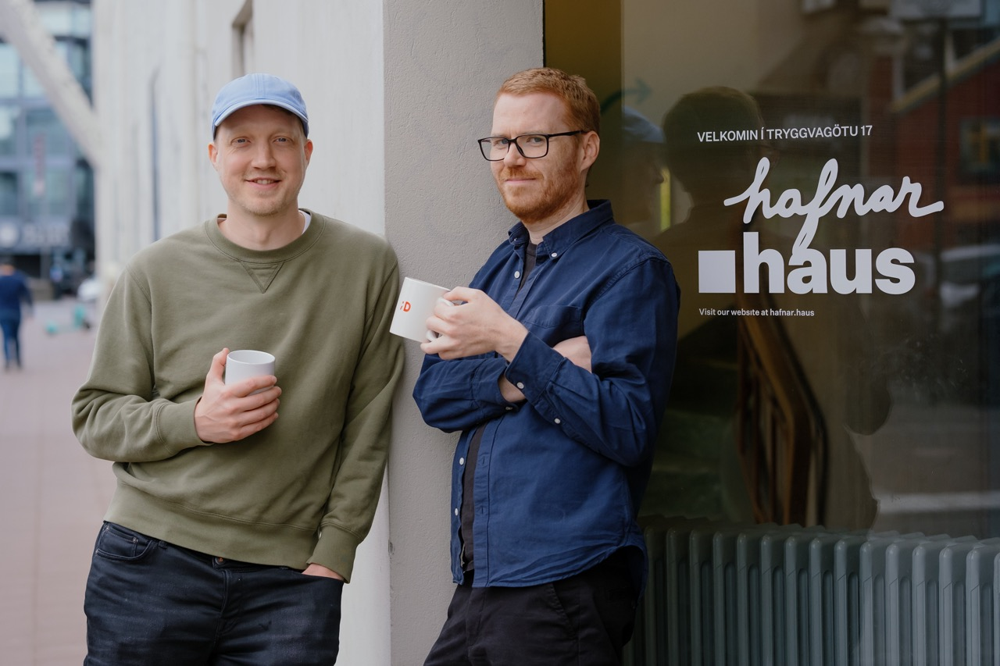

Reykjavik, Iceland - 08/23/2023: Ghosts is thrilled to unveil their all-new, momentum-based, time-trial racer, Phantom Spark, via a new trailer that debuted yesterday at the Future Game Show.
The game has been in development since 2021 and is being developed by Torfi Asgeirsson and Joon Van Hove, founders of indie game studio Ghosts Ehf, out of their office in Hafnar.haus in Reykjavik. After successfully releasing their previous game NUTS in 2021, they secured a funding and publishing deal with the UK Games-publisher Coatsink. Two and a half years into development, the game has finally been announced to the public with its first trailer at Gamescom in Cologne
There is no limit to your speed in Phantom Spark, encouraging you to push the boundaries and take risks to smash time trial records throughout its weaving, rollercoaster-like levels, Phantom Spark features both a full single-player campaign and the option to compete via local split-screen and online leaderboards and will launch onto PC and Nintendo Switch next year.
Momentum is everything in this gravity defying future-fantasy time-trial racer. Master the ancient tracks of this forgotten land as its ancestral guardians guide you along the way. Weave through spectacular ruins and glide through the air as you seek your ultimate goal of perfection via the game’s easy-to-learn and hard-to-master gameplay.
Phantom Spark is not like other racing games. There are no circuits where you need to repeat many laps, instead the tracks are short and every single input matters. Your position on the track going into a turn, and the timing of the brakes, can give you a radically different outcome, which will make you want to replay these tracks over and over again until you perfect each corner.
The game will be in development for several more months as the developers finish up all the tracks, art and music. There will be several announcements leading up to the launch with new trailers and demos expected early next year. People can Wishlist the game on Steam and follow it on social media to get notified about future updates. It helps out the developers, as more wishlists increase the chance that the game is featured in the store at launch.
International collaboration and staying small Ghosts Ehf. consists of just Torfi and Joon, but a total of 11 short-term contractors have contributed to Phantom Spark. Ghosts likes to work in a small team with reduced overhead and work with experienced freelance artists from all over the world. The only full-time team-member outside of the company is the art director, Joost Eggermont, based in Rotterdam. Other collaborators are working from Norway, Australia, Germany, the UK and the USA. This unconventional way of working enables them to collaborate with artists doing exciting work from all over the world.
Before beginning to work on Phantom Spark, Joon and Torfi developed the game NUTS (2021), a surveillance mystery game where the player needs to spy on a group of squirrels in a remote forest. NUTS is a narrative adventure game where you place cameras near the habitat of a squirrel and record their movements. It has been called “Firewatch for David Attenborough fans” by TechRadar.
Among other awards and nominations, it received the Nordic Game of the Year award at the Nordic Game conference in Malmo in 2022. The game was produced by Apple for the Apple Arcade subscription game platform, and was later released on Steam for PC, and Nintendo Switch. It is the second game developed in Icelandic to be released on a Nintendo platform. The game was in active development during the first year of the Covid pandemic.
Ghosts is a new game development studio based in Reykjavik. Founding members Joon and Torfi have assembled a team of experienced artists for the project, including Joost Eggermont as art director, to develop the highly stylized, pure time-trial racing game Phantom Spark. Previously they shipped the game NUTS together, and have released games including: The Professional, A Firm Handshake, Don’t Trip, Triple Agent and Out of the Loop.
Joon and Torfi have each taught courses in game design and development at Reykjavik University and Listahaskolinn. Torfi is a founding member of Game Makers Iceland, a community organization which organizes meetups and provides online resources for game developers in Iceland.
Additional links

Reykjavík - 23. Aug 2023: Leikjafyrirtækið Ghosts kynnir með stolti glænýjan, hraðfleygan tímatöku-kappakstursleik: Phantom Spark. Leikinn má sjá í glænýrri stiklu sem var frumsýnd á ‘Future Game Show’ viðburðinum á GamesCom í gær, sem er stærsta tölvuleikjaráðstefna Evrópu.
Ghosts samanstendur af Torfa Ásgeirssyni og Joon Van Hove en þeir hafa verið að vinna að leiknum Phantom Spark síðan 2021. Áður hafa þeir saman búið til og gefið út leikinn NUTS sem kom út á öllum helstu tölvuleikjamiðlum árið 2021. Phantom Spark er fjármagnaður og gefinn út af breska leikjaútgefandanum Coatsink en leikurinn hefur verið í framleiðslu í yfir tvö og hálft ár og var stiklan sýnd á GamesCom ráðstefnunni í Köln.
Í Phantom Spark eru engin hraðatakmörk, þú ræður ferðinni hvort sem þú spilar ein eða með vinum. Brautirnar er snúnar og eina sem gildir er að fara sem hraðast í gegnum þær, hvernig sem þú ferð svo að því. Í Phantom Spark er hægt að spila sjálfur í gegnum stigmagnandi sögu, í spennandi sófaviðureignum við vini, eða sanna sig sem allra besti netspilarinn. Phantom Spark er væntanlegur á PC og Nintendo Switch snemma á næsta ári.
Það er enginn kappakstursleikur á markaði í dag sem er einsog Phantom Spark. Þú þarft ekki að taka marga hringi á hverri braut heldur er hver braut stutt og snörp. Þegar að þú brunar áfram finnurðu hvernig hver bremsa, beygja og ígjöf skiptir máli í tímatöku. Hver einasta tilraun telur þar sem fullkomnun er aðeins náð með því að endurtaka leikinn og gera betur.
Phantom Spark er á loka metrunum í framleiðslu, eftir nokkra mánuði verður leikurinn tilbúin með öllu sem fylgir, kappakstursbrautum, tónlist og útliti. Áður en leikurinn verður gefinn út verða fleiri þættir úr honum kynntir, meðal annars spilanleg prufa og fleiri stiklur. Hægt er að setja leikinn á óskalistann sinn hjá Steam og fylgjast með frekari uppfærslum á samfélagsmiðlum. Það styður leikjahönnuðina heilmikið þegar að margir setja leikinn á óskalista þar sem það eykur líkur á að leikurinn verður settur á forsíðu Steam þegar að hann er gefinn út.
Þó að fyrirtækið Ghosts samanstandi aðeins af þeim Torfa og Joon hafa alls 11 manns komið að þróunn Phantom Spark í mismunandi hlutverkum. Ghosts hefur yndi af að starfa í litlum nánum teymum, með því er hægt að einblína meira á leikinn og hægt að starfa með sérfræðingum allstaðar að. Fyrir utan Torfa og Joon er einn í teyminu í fullri vinnu en það er Joost Eggermont sem er listrænn stjórnandi og sér um allt útlit leiksins. Joost er staðsettur í Rotterdam, Hollandi. Aðrir sem hafa komið að leiknum eru búsettir í Noregi, Ástralíu, Þýskalandi, Bretlandi og Bandaríkjunum. Þetta vinnufyrirkomulag gerir Ghosts kleift að vinna með spennandi listafólki allstaðar að úr heiminum.
Fyrir Phantom Spark gáfu Joon og Torfi saman út leikinn NUTS (2021), ráðgátuleik þar sem spilarinn þarf að njósna um íkorna í afskekktum skógi. NUTS er ævintýraleikur þar sem virknin er að staðsetja myndavélar til að taka upp og komast að því hvað íkornar skógarins eru að gera. Leikurinn var kallaður “Firewatch fyrir David Attenborough aðdáendur” í leikjarýni Tech Radar Meðal annara viðurkenninga og verðlauna var NUTS valinn Leikur ársins á Norðurlöndunum á Nordic Game Conference í Malmö á síðasta ári. Leikurinn var gerður fyrir Apple Arcade en var seinna gefinn út á Steam og Nintendo Switch. Aðeins einn leikur hefur áður verið gerður á Íslandi sem hefur verið gefinn út á Nintendo leikjavél. Leikurinn var þróaður á fyrsta ári Covid faraldursins.
Ghosts ehf er nýtt leikjastúdíó í Reykjavík. Stofnendur þess, Joon og Torfi hafa safnað saman hæfileika- og reynslu miklu teymi fyrir Phantom Spark, þar á meðal er Joost Eggermont sem er listrænn stjórnandi verkefnisins og sér um að útlit leiksins er með sterkum stíl. Áður hefur Ghosts ehf. gefið út leikin NUTS saman og þess fyrir utan hafa Torfi og Joon gefið út leikina The Professional, A Firm Handshake, Don’t Trip, Triple Agent og Out of the Loop Joon og Torfi hafa báðir kennt tölvuleikjagerð og hönnun við Háskóla Reykajvíkur og Listaháskóla Íslands. Torfi er einn af stofnendum Game Makers Iceland sem er samfélag tölvuleikjahönnuða og sér um að skipuleggja hittinga og taka saman og deila reynslu/gögnum fyrir íslenska leikjahönnuði.